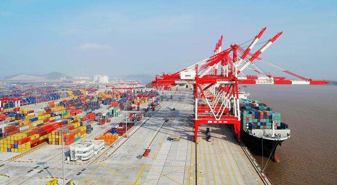

Hanting Hotels:
The hotel has 106 rooms and it opened in 2013.
Hanting Hotels (Shanghai Lingang New City store) is located in Pudong New Area Lingang New Town mud town, adjacent to the "Lingang heavy equipment industry park", the exit of outer ring S2 Hu Lu high-speed South Lu highway.
Sixth People's Hospital East Hospital is one of the municipal Party committee and municipal government implementation of the ‘5+3+1 project’, it constructed in September 26, 2009, opened in October 26. As the only third level hospital in the former Lingang area, the east hospital plays a very important role in medical insurance to enhance the medical service capacity of Lingang new town and the surrounding areas of Pudong, to meet the needs of the residents' health and to achieve a new round of development of Lingang town.
Shanghai University City
Shanghai University City is located in Shanghai Pudong Nanhui Town, about 75 kilometers from downtown Shanghai, is part of the Shanghai University restructuring plan "3+2+X", the park started construction in 2004, initially as the construction of soft environment in the heart of the construction of Shanghai international shipping service platform, the shipping industry and marine high tech talent training is the core of a loose education park. There are four universities in Shanghai Maritime University, Shanghai Ocean University, Shanghai Dianji University, Shanghai Jianqiao College, and Shanghai University of Electric Power. Currently, about 57 thousand teachers and students are settled in Lin gang University Town.
Shanghai Maritime University
The school has 2 postdoctoral research station (Transportation Engineering, electrical engineering), 2 top doctoral level disciplines (Transportation Engineering, management science and Engineering) 17 second doctoral disciplines, 13 top discipline master degree programs, 57 second discipline master degree programs, 5 professional master degree authorization, 45 undergraduate and 12 specialty in Higher Vocational colleges. There are 9 key research bases at provincial and ministerial level. SMU utilizes rwo level management system of University and college, and now has the Merchant Marine Academy Transportation College, school of economics and management, logistics, engineering (with the Netherlands Institute of electrical and Mechanical Engineering), School of law, College of information engineering, School of foreign languages, School of marine science and engineering, College of Arts and Sciences (Xu Beihong Art Institute. Among more than 1000 full-time teachers, there are 145 professors, and the proportion of teachers with doctoral degree is about 45%. The school is committed to cultivating all kinds of specialized personnel required by the national shipping industry. It has transported a large number of graduates to the national shipping enterprises and institutions and government departments, known as the cradle of senior shipping talents.
Shanghai Ocean University
The school has the Institute of marine science, Marine Research Institute, the system consists of digital ocean medicine and Neuroscience Research Institute, Institute of marine drug and health food, marine policy and Law Research Institute. The scientific facilitate consists of Marine Fisheries GIS remote sensing technology laboratory, marine ecological system and environmental laboratory, China Ocean Remote Sensing and information Research Center, Marine Fisheries Center for economic research, marine culture research center and other research institutions. It has a modern campus network and serves the Chinese fishery network in the aquatic industry of china. There are about 1 million 200 thousand books, about 700 thousand books and more than 30 databases in the school library. The book highlights the characteristics of the ocean, aquatic products and food of the school.
Shanghai Dianji University
Shanghai Dian Ji University is a full-time undergraduate college, which is mainly based on engineering, economics, management, literature, art and other disciplines. The predecessor of the school was founded in 1953 in Shanghai motor manufacturing school. The school currently has 25 undergraduate majors, it has 2 national characteristic subjects (mechanical design and manufacturing automation, international economic and trade) and 6 characteristics of Shanghai city projects.
Shanghai Jianqiao College
Shanghai Jianqiao College is a full-time undergraduate private university.
The school was founded in April 2000, funded by the Shanghai bridge group, located in Lingang new town, Shanghai. In April 2001, the school was approved as the Shanghai Jianqiao Vocational Technical College. It formally included in the national plan enrollment and mainly engaged in Higher Vocational Education at the junior level.
Subway: Line 16
Dishui Lake：1043 line 1 of Yangshan Harbor, Shen Gang Line 1
Lingang Avenue:1077, 1078
Luchao Port: 2 boats to Shengsi,
1 boat to Mt. Putuo
- China Maritime Museum: Location: Shanghai Hong Kong Road 197
- Dishui Lake: Location: Metro Line 16 DishuiLake Station
- Dishui Lake Food Festiva: Location: Metro Line 16 DishuiLake Station
- Bairun era shopping center: Location: Metro Line 16 DishuiLake Station
Lingang Home Community is mainly composed of Ocean Community, Maritime Community, Guzong Road Commercial Network and Community Service Station. The total area of maritime community is 121,253 square meters, and the green area covers more than 35% with a total of 1138 suites. The total area of marine community is 101425.9㎡ with afforestation area of 35% and 948 suites, and up to 2086 households in the future.
Lingang Yangshan Bonded Port Area has a planned area of 8.14 square kilometers and is composed of three parts: the land area of the bonded area, the Donghai Bridge and the port area of Xiaoyangshan Island. The land administration belongs to Shanghai and the administrative area of the island belongs to Zhoushan, Zhejiang Province and is hosted by Shanghai.
Shanghai Lingang Economic Zone covers an area of 241 square kilometers and is mainly divided into five functional blocks such as heavy equipment area, logistics zone, main industry zone, comprehension zone and Fengxian area.